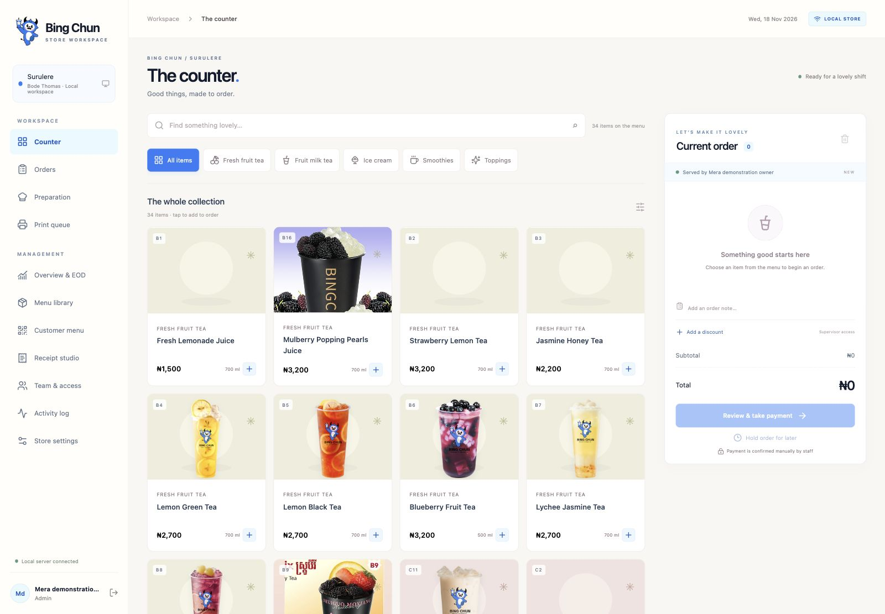
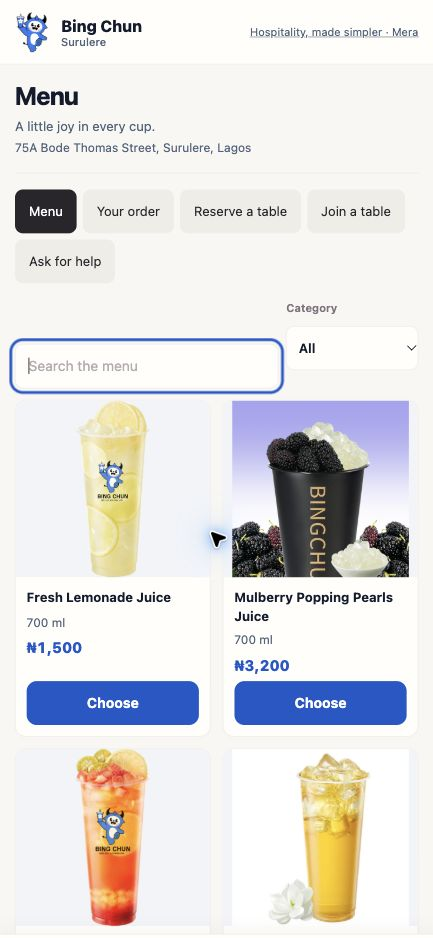
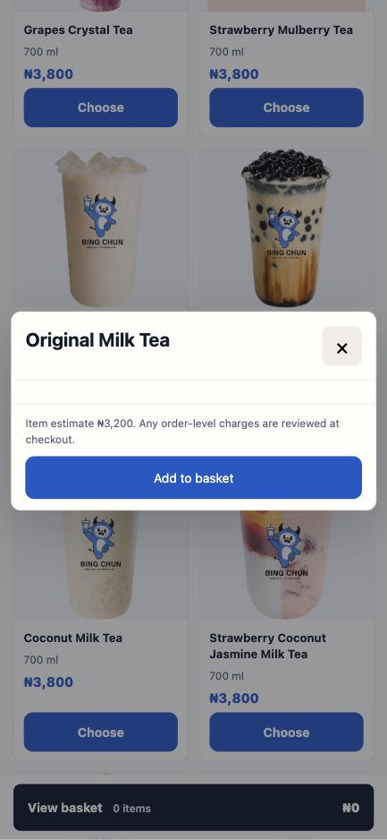

No original customer ordering screen exists. Left: verified original Counter as brand/asset reference. Right: real narrow customer menu, basket and customization dialog; distinct tasks and viewports.


